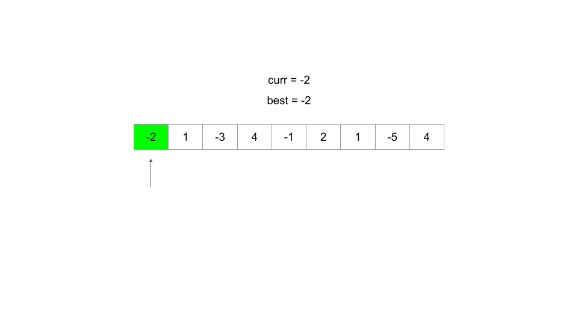
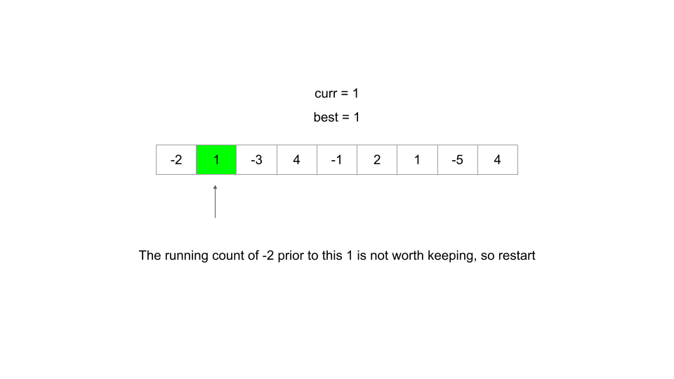
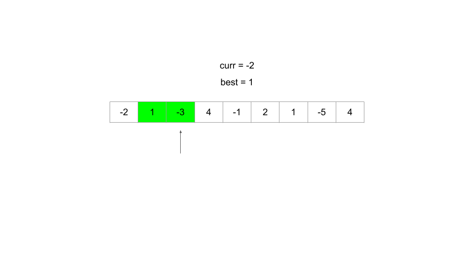
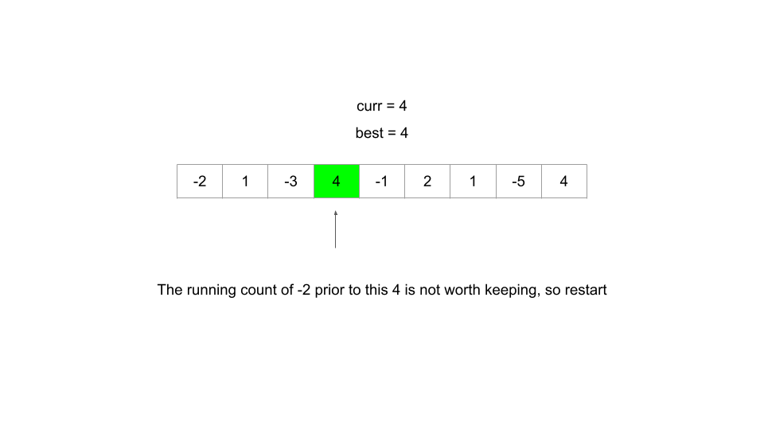
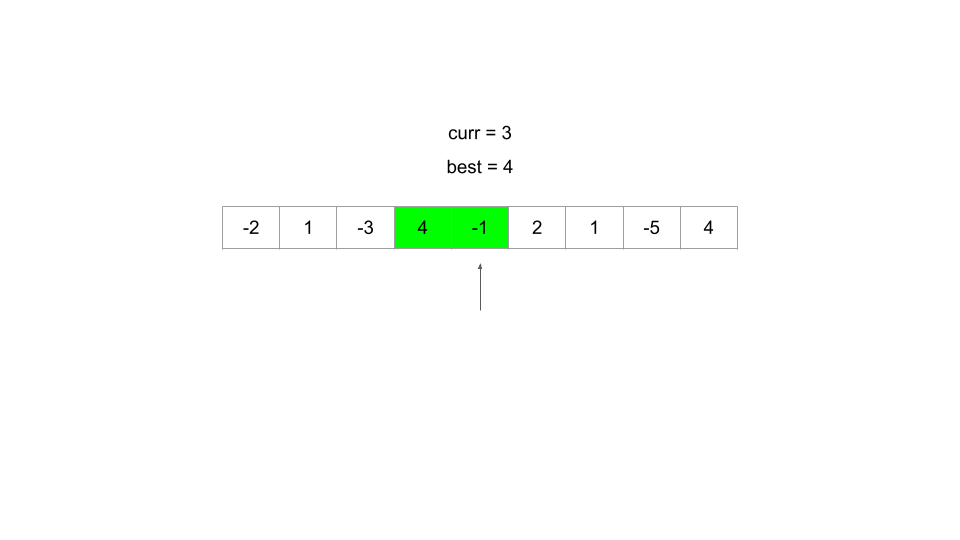
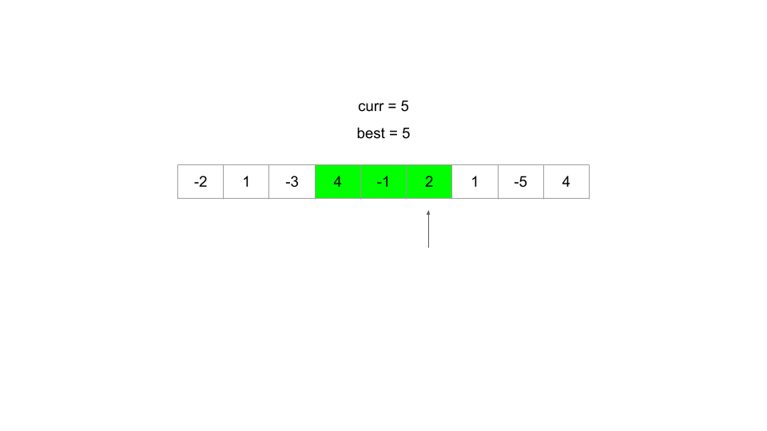
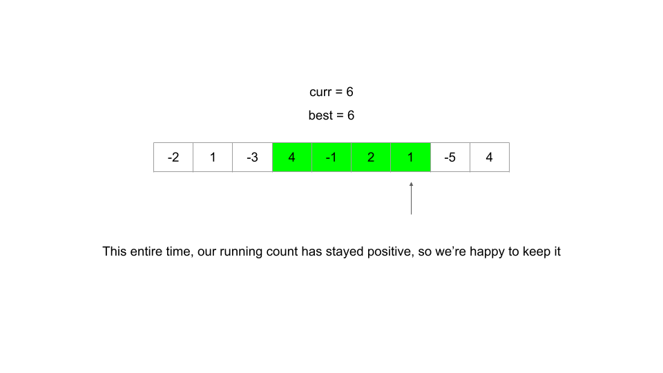
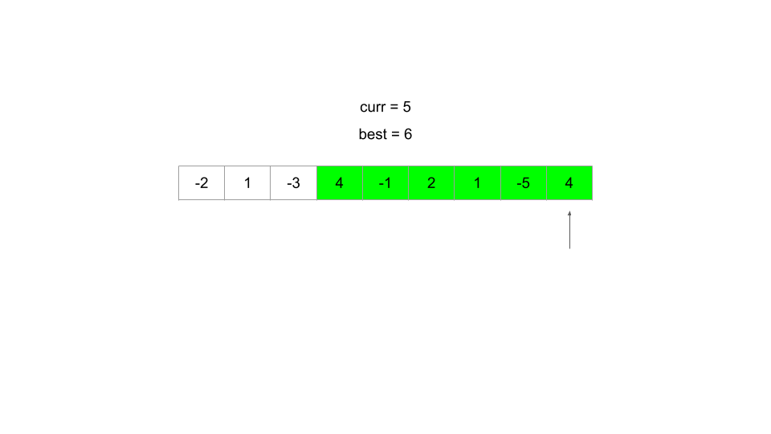
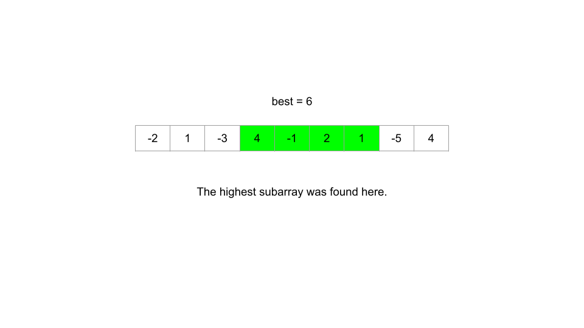

Kadane's Algorithm is an algorithm that can find the maximum sum subarray given an array of numbers in 𝑂 ( 𝑛 ) O(n) time and 𝑂 ( 1 ) O(1) space. Its implementation is a very simple example of dynamic programming, and the efficiency of the algorithm allows it to be a powerful tool in some DP algorithms. If you haven't already solved Maximum Subarray, take a quick look at the problem before continuing with this article - Kadane's Algorithm specifically solves this problem.
Kadane's Algorithm involves iterating through the array using an integer variable current current, and at each index i i, determines if elements before index i i are "worth" keeping, or if they should be "discarded". The algorithm is only useful when the array can contain negative numbers. If current current becomes negative, it is reset, and we start considering a new subarray starting at the current index.
Pseudocode for the algorithm is below:
Line 3.1 of the pseudocode is where the magic happens. If current current has become less than 0 from including too many or too large negative numbers, the algorithm "throws it away" and resets.









While usage of Kadane's Algorithm is a niche, variations of Kadane's Algorithm can be used to develop extremely efficient DP algorithms. Try the next two practice problems with this in mind. No framework hints are provided here as implementations of Kadane's Algorithm do not typically follow the framework intuitively, although they are still technically dynamic programming (Kadane's Algorithm utilizes optimal sub-structures - it keeps the maximum subarray ending at the previous position in current current).